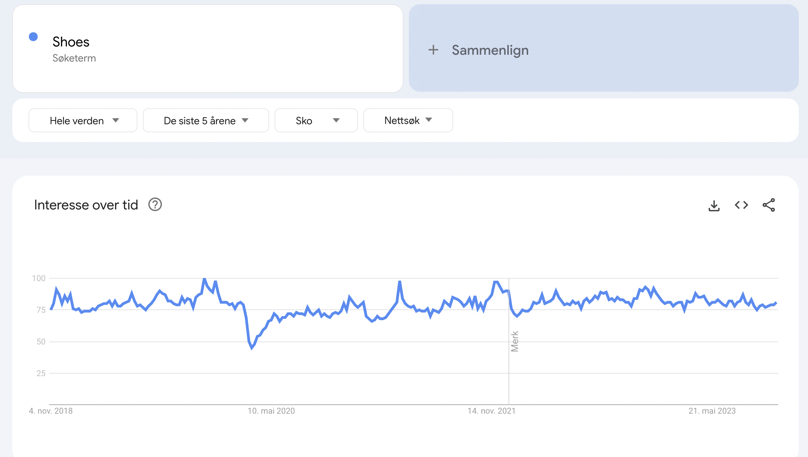
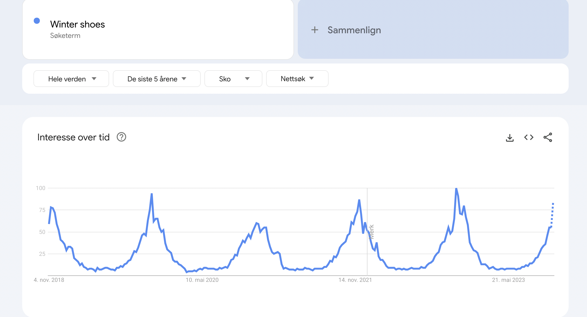
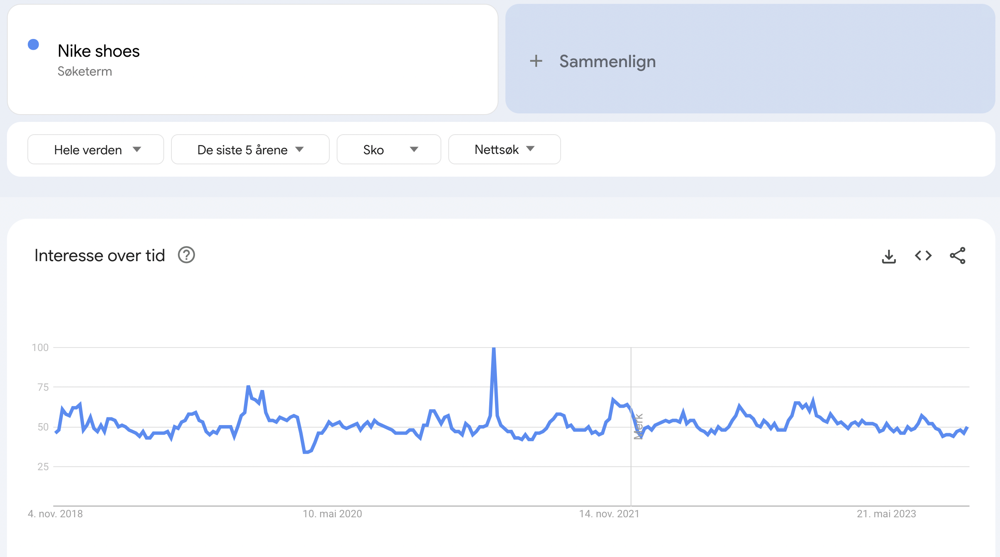
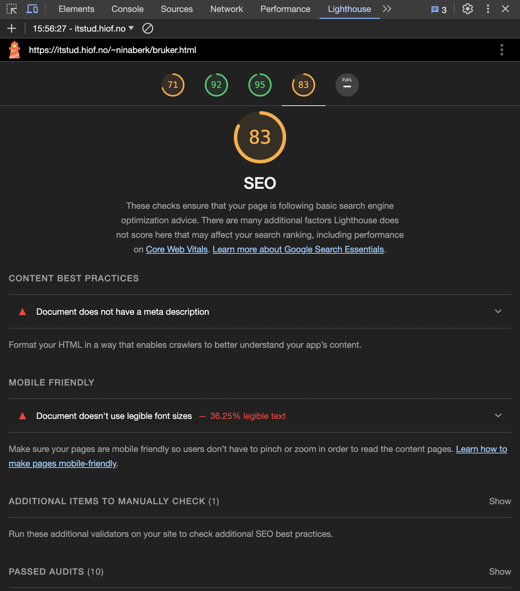
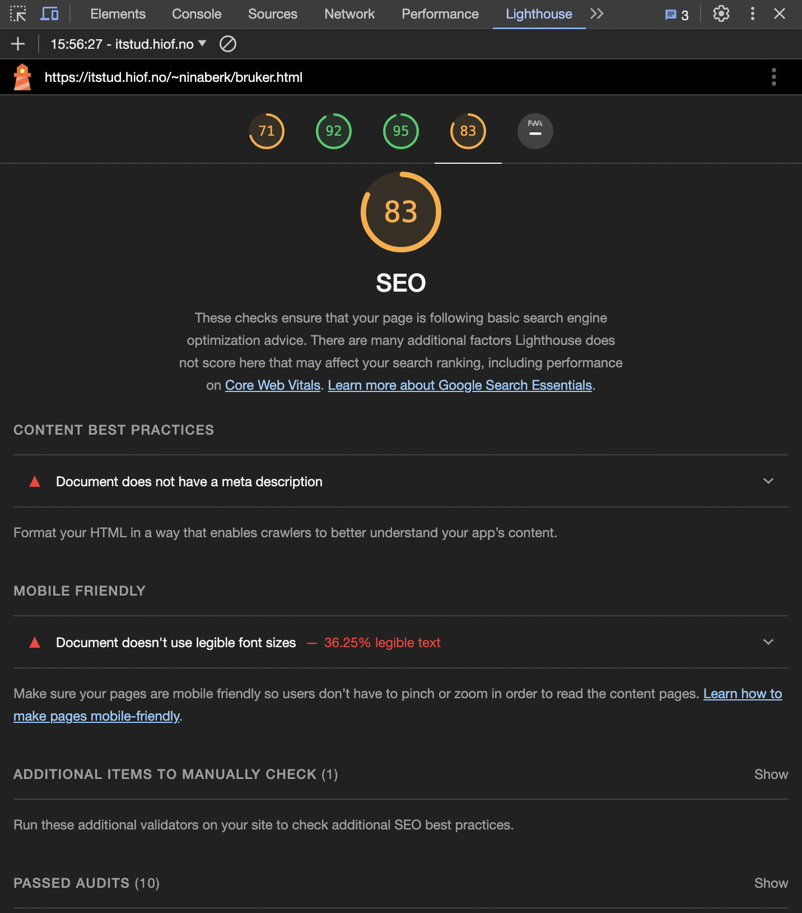
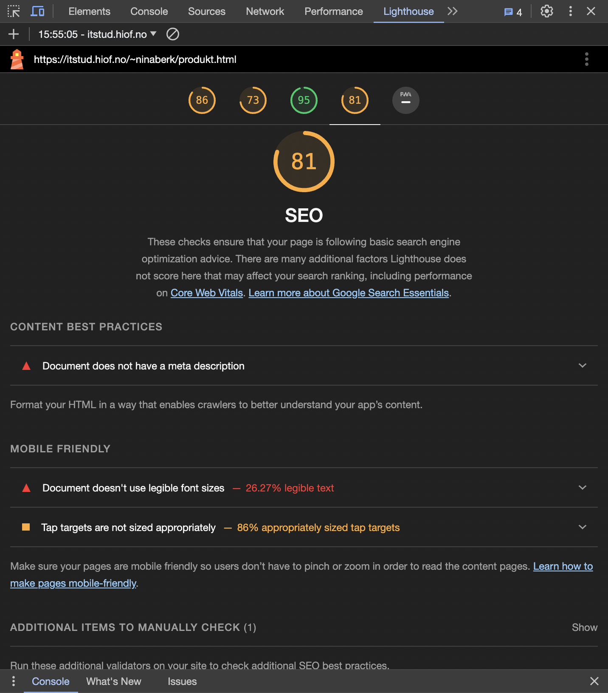
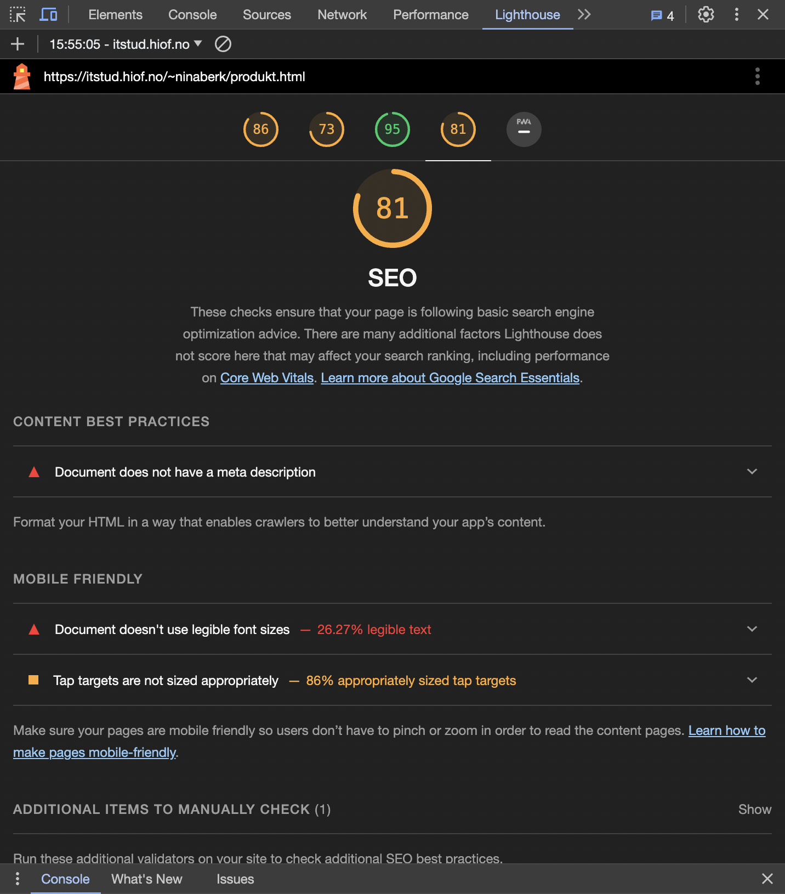

Analyse av .html filene mine frå oblig3
Google trends
-
Shoes
Nøkkelordet Shoes har ein relativt konstant søkeinteresse over lengre tid. Detta vil seie at uansett når på året, vil dette ordet vere relevant.
 -
Winter shoes
Vi kan sjå at dette nøkkelordet har spikes, altså går oppover, kvart år på vintertida.
 -
Sneakers
Vi kan sjå at dei siste 5 åra har søkeinteressen gått opp ei smule. Dette kan komme av av sneakers er blitt meir populære og folk vil difor kjøpe seg slike sko. Ellers er det også kanskje konstant uavhengig av årstid.

-
Nike shoes
Nike shoes har også ein ganske konstant graf. Den viser ein spike, som kna komme av at i 2021 var skoen Nike Air Force svært populær.

Før forbedring:
index.html
SEO resultat
Analyse ved hjelp av Lighthouse


Desktop resultat: Eg fikk totalt 90% på SEO desktop.
Ingen meta description: meta name="description"
Har ikkje gode font-størrelser
 

Mobil resultat: Eg fikk score 83 på mobil index. Her fikk eg manglande meta description og ulesbar font-storleik.
UU resultat
Analyse ved hjelp av Webaim

Resultat:
Eg fikk totalt 14 errors og 5 alerts på indexen min

Missing form labels:
Eg har to felt med input, og fekk da missing form label på disse.
Empty buttons:
To errors på buttons som ikkje er funksjonelle.
Empty links:
Eg fekk 8 errors om missing link. Dette er på ikonar som eg skal sende brukeren til ein anna side, som ikkje vert laga.
Suspicious alternative text:
Alternativ teksten min burde endrast
Missing first level heading:
Mangla h1 på index sida mi. Dette er viktig å ha for å halde på den viktigaste delen av sida
Skipped heading level:
Eg gikk rett fra h2 til h4, utan å inkludere h3. Dette burde endrast på.
Possible heading:
Dette gjelder "Already have an account?" på enden av sida, som eg tenkte ikkje skal vere ein heading.
Chat GPT
Analyse ved hjelp av ChatGPT

Resultat
| Webaim | Lighthouse | ChatGPT | |
|---|---|---|---|
| SEO | Manglende meta description | Manglende meta description. T.D.: Meta description og menta keywords. CSS og Google Fonts kan påvirke innlastingstida. |
|
| UU | Ukjente input felt. U-funksjonelle knapper Ikoner utan URL Anbefalt endring av alt-tekst |
... | Navigasjonsikoner burde ha ein beskrivende alt tekst |
produkt.html
SEO resultat
Analyse ved hjelp av Lighthouse
Desktop resultat:Eg fikk totalt 90% på SEO på desktop versjon
På desktop versjon mangla eg meta-description.
 

Mobil resultat: Eg fikk 81% på mobil versjon.
Her mangla eg også meta-description. Nokon av font-størrelsane var ulesbare og 14% av touch-bare knapper var for små.
UU resultat
Analyse ved hjelp av Webaim
Resultat:
Eg fikk totalt 14 errors og5 alerts på indexen min

Missing form labels:
Detta kommer av headingen, som er lik på alle sidene. Eg har to felt med input, og fekk da missing form label på disse.
Empty buttons:
Detta er også ein del av headingen. To errors på button som ikkje er funksjonelle.
Empty links:
Detta er også element som skal i hovudsak bli linka til ein anna seksjon. Disse vert ikkje laga.
Contrast Errors:
Denne seier at bakgrunnsfargen min er for lik text fargen, og gjelder da navigasjonen på starten av main.
Suspicious alternative text:
Kom fra heading. Logo alternativ tekst burde endrast.
Missing first level heading:
Mangla ein h1 her også. som sagt, den er viktig å ha. Ved forbedringar tenkjer eg å bruke produkt namn som h1.
Skipped heading level:
Eg hoppa rett fra h3 til h5. Dette burde endrast på.
Possible heading:
Dette gjelder også "Already have an account?", som er ein del av footer og er lik på alle 3 sidene.
Redundant link:
Eg har linka fleire element til same url, som kommer av at eg ikkje har laga fleire nettsider.
Chat GPT
Analyse ved hjelp av ChatGPT

Resultat
| Webaim | Lighthouse | ChatGPT | |
|---|---|---|---|
| SEO | Manglende meta description På mobil: Endre storliek |
Manglende meta description. TD: Meta description og meta keywords. Legge til fleire keywords |
|
| UU | Input felt uten form label
U-funksjonelle buttons Manglende link på ikonane i navigasjonen Forbetre alt text |
Input felt uten form label Bedre beskrivelse på navigasjonsikonane Forbetre alt text |
bruker.html
SEO resultat
Analyse ved hjelp av Lighthouse


Desktop resultat: Eg fikk 90 på SEO.
Manglande meta-description i HTML.
Mobil resultat: Eg fikk 83 på SEO brukersida på mobil.
Igjen, manglande meta-description som på alle dei andre, og ulesbar tekst.
UU resultat
Analyse ved hjelp av Webaim

Resultat:
Eg fikk totalt 14 errors og5 alerts på indexen min

Missing form labels:
Samme som på dei to forrige.
Empty buttons:
Igjen, samme problem som på forrige.
Empty links:
Samme problem.
Suspicious alternative text:
Igjen, problem med alt text på logo.
Missing first level heading:
Mangla h1 på denne og. Tenker å evt. legge til noko ekstra tekst som kan ver h1, slik at brukeren veit hen er på burkersida.
Skipped heading level:
Eg gikk igjen rett fra h3 til h5.
Possible heading:
Ingen av desse skal ver headings.
Chat GPT
Analyse ved hjelp av ChatGPT

Resultat
| Webaim | Lighthouse | ChatGPT | |
|---|---|---|---|
| SEO | Manglande meta description På mobil: endre storleiker |
Forbetre alt text. |
|
| UU | ... | ... |
Forbedring:
Index:
Utifra SEO analysen la eg til meta description på alle. Altså både index, bruker og produkt html.
Det var ikkje så mange errors eg kunne rette opp når det gjeld UU.
Tilgjengelighet:
Skjermleserkompatibilitet:

På index sida var det meste lese opp.

På produkt sida vart det meste lese opp.

På bruker sida vert ikkje noke anna enn header og footer lese opp.